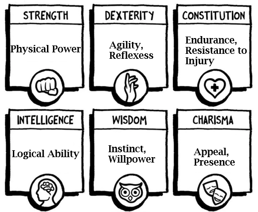

import { rollAbilityScore } from "./custom.js"
viewof statRolls = Inputs.button(html`<button style="color: black; background-color: lightgray;">Roll Stats</button>`, {value: null, reduce: () => [rollAbilityScore(),rollAbilityScore(),rollAbilityScore(),rollAbilityScore(),rollAbilityScore(),rollAbilityScore()]})3 Character Abilities

Ability Scores
Each character will have a score ranging from 6 to 18 in each of the following abilities. A bonus or penalty is associated with each score, as shown on the table below. Each class has a Prime Requisite ability score, which must be at least 9 for the character to become a member of that class. Additionally, there are required minimum and maximum scores for each character race other than Humans, as described under Character Races.
| Ability Score | Bonus/Penalty |
|---|---|
| 3 | -3 |
| 4-5 | -2 |
| 6-8 | -1 |
| 9-12 | 0 |
| 13-15 | +1 |
| 16-17 | +2 |
| 18 | +3 |
| 19 | +4 |
| 20 | +5 |
Strength: This ability measures the character’s raw physical power. Strength is the Prime Requisite for Fighters. Apply the ability bonus or penalty for Strength to all attack and damage rolls in melee (hand-to-hand) combat. Note that a penalty here will not reduce damage from a successful attack below one point in any case (see the Combat section for details).
Intelligence: This is the ability to learn and apply knowledge. Intelligence is the Prime Requisite for Magic-Users, and they receive a Spell Bonus based on their Intelligence score. The ability bonus for Intelligence is added to the number of languages the character can learn to read and write. Characters with an Intelligence penalty may struggle with learning languages, being limited to understanding only their native language.
Wisdom: Wisdom is a combination of intuition, willpower, and common sense. It is the Prime Requisite for Clerics, who receive a Spell Bonus and a bonus to Turn Undead based on their Wisdom score. The Wisdom bonus or penalty may apply to some saving throws vs. magical attacks, particularly those affecting the target’s will.
Dexterity: This ability measures the character’s quickness, balance, and aptitude with tools. Dexterity is the Prime Requisite for Thieves. The Dexterity bonus or penalty applies to all attack rolls with missile (ranged) weapons, to the character’s Armor Class value, and to the character’s Initiative die roll.
Constitution: Constitution is a combination of general health and vitality. Apply the Constitution bonus or penalty to each hit die rolled by the character. Note that a penalty here will not reduce any hit die roll to less than 1 point.
Charisma: This ability represents the character’s ability to influence or lead people. Those with high Charisma are well-liked or highly respected. Apply the Charisma bonus or penalty to reaction rolls. Also, the number of retainers a character can hire and the loyalty of those retainers are affected by Charisma.